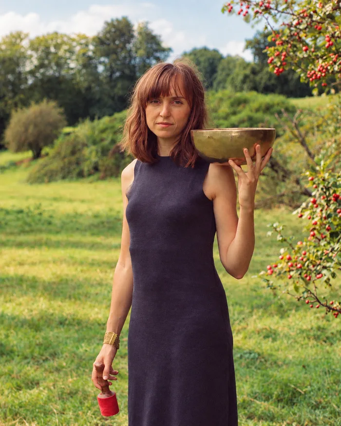

Sonne Soundhealing Bruxelles

Sonne Soundhealing est la pratique de Hendrike Scharmann, praticienne en sound healing, musicienne et guide vocale. Avec plus de dix ans d’expérience dans le travail avec le son, la voix et le système nerveux, son approche tisse ensemble des traditions sonores anciennes et une conscience incarnée.
Formée à l’origine comme violoniste classique et jazz, la relation de Hendrike au son s’est transformée à travers de longues périodes de voyage et d’immersion, notamment en Inde et dans la région de l’Himalaya. La musique est passée d’un objet à comprendre ou à interpréter à une expérience vécue et méditative. Une manière d’écouter en profondeur, de ressentir et d’accorder le corps de l’intérieur.
Son travail aujourd’hui est ancré dans la compréhension que le son n’est pas quelque chose d’extérieur, mais quelque chose que nous pouvons rencontrer et incarner consciemment. À travers la voix, les bols chantants, le gong et d’autres instruments, elle crée des voyages sonores spacieux qui soutiennent la régulation, la libération et la connexion. Invitant les participant·e·s à passer du mental à l’expérience directe, et de l’effort à la présence.
Découvrez un espace pour ralentir, écouter et vous reconnecter à vous-même à travers le son.
Bain sonore
Une expérience immersive guidée par les bols tibétains, gongs, tambour chamanique, carillons et la voix. Allongé confortablement, vous vous laissez porter par les sons et les vibrations, dans un moment de repos profond et d’écoute intérieure.
Cercle Mantra
Un moment collectif autour de la voix, du souffle et de mantras simples chantés ensemble. Aucune expérience en chant n’est nécessaire: il ne s’agit pas de « bien chanter », mais d’explorer sa voix et de ressentir la puissance de chanter ensemble.
- Les séances sont guidées par Hendrike Scharmann, musicienne et fondatrice de Sonne Soundhealing à Bruxelles.